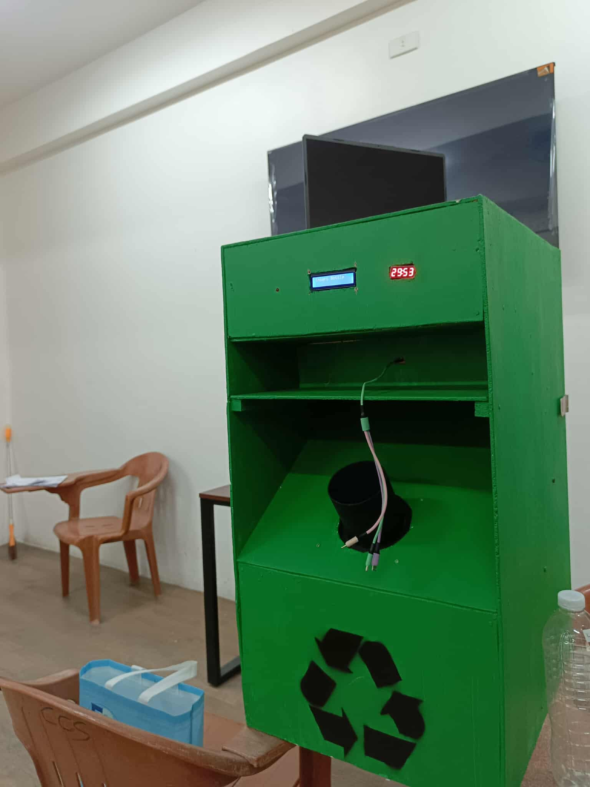
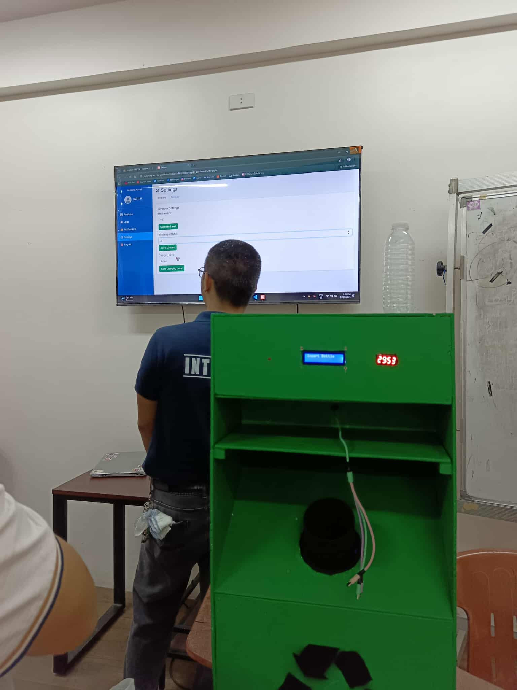
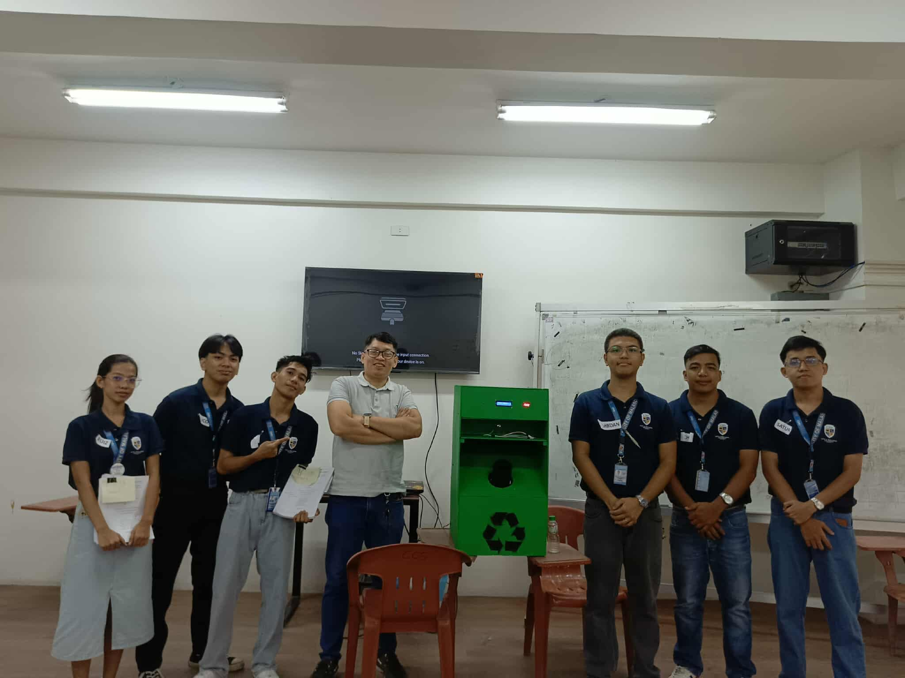
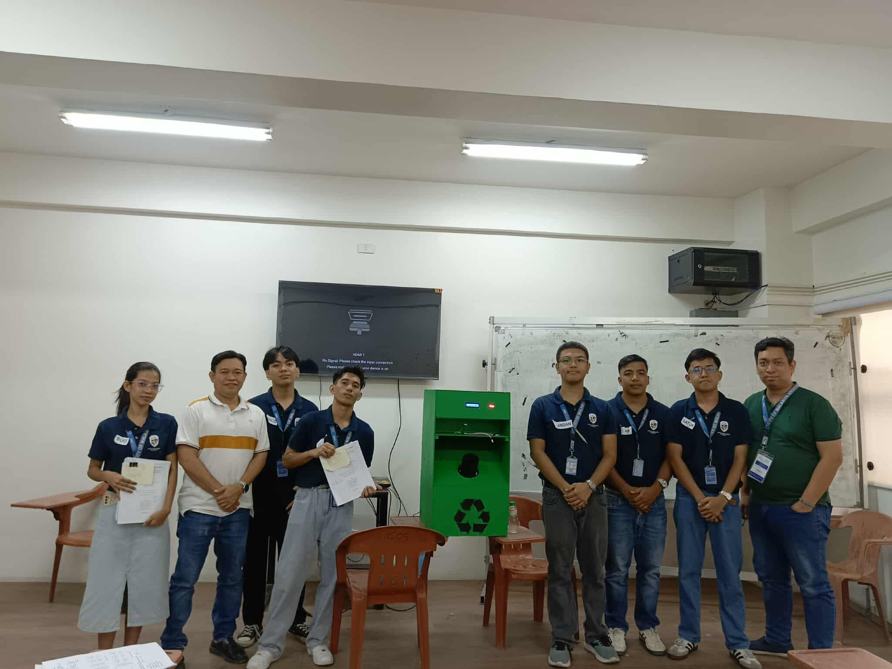
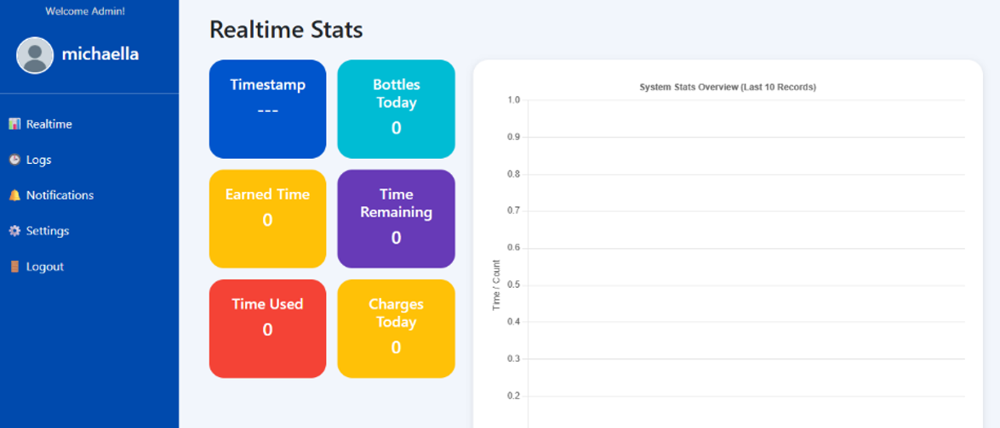
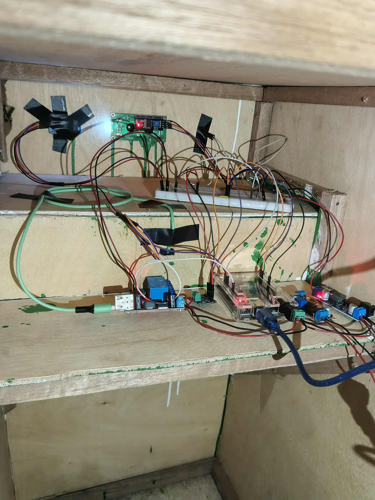
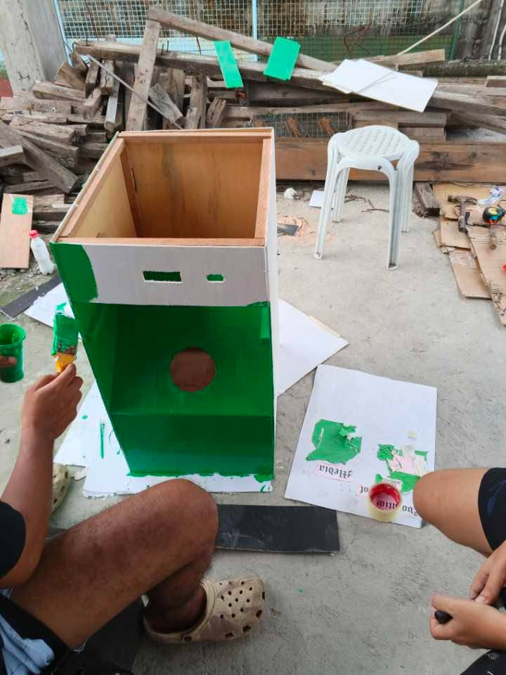

02.1
Bottle Insertion
The process begins when a user inserts a plastic bottle into the disposal unit. The system uses an Arduino UNO microcontroller connected to sensors that detect the bottle and gather information needed for validation.
Capstone Project
A smart recycling system designed to encourage proper plastic bottle disposal by providing phone charging rewards to students of City of Malabon University.
01 / Overview

Plastic bottle waste remains an environmental concern at the City of Malabon University (CMU), where traditional waste management practices have struggled to encourage consistent proper disposal. To address this problem, our six-member capstone team developed the Smart Plastic Bottle Disposal System with Phone Charging Rewards, a technology-based solution designed to encourage responsible disposal through a practical incentive.
The system uses an Arduino UNO, sensors, and a phone-charging mechanism to automate bottle detection and provide charging time for valid bottles. It also records disposal and charging activity for monitoring through a web-based interface. By combining embedded hardware, software, and an incentive-based approach, the project aims to promote environmental awareness and support more sustainable waste disposal practices within the university community.
02 / System
02.1
The process begins when a user inserts a plastic bottle into the disposal unit. The system uses an Arduino UNO microcontroller connected to sensors that detect the bottle and gather information needed for validation.
02.2
The IR sensor, ultrasonic sensor, load cell, and CP sensor provide readings related to the bottle's presence, size, weight, and material. The system checks whether the inserted bottle meets its predefined requirements. If the bottle is invalid or no bottle is detected, the user is prompted to try again.
02.3
Once a valid bottle is accepted, the system calculates the corresponding phone charging time using its configured reward mechanism. The relay module activates the charging outlet, allowing the user to receive the reward for proper bottle disposal.
02.4
Bottle deposits and charging sessions are recorded in the database for tracking and reporting. The web-based admin dashboard allows administrators to monitor disposal records, charging activity, and system statistics. After the process is completed, the system resets and is ready for the next user.
03 / Development
The project was developed using the Agile Development Model, with hardware, programming, interface design, and testing handled through a collaborative process. Each team member contributed to different parts of the system, from the physical prototype to its software and documentation.
03.1 / My Contribution
My main contribution focused on the system's Arduino-based hardware. I helped design and assemble the electronic components, including the Arduino board, wiring, and sensors. I also developed the embedded logic for bottle detection and insertion, tested the hardware's behavior, and worked on integrating the Arduino with the wider system.
03.2 / Development Approach
The team followed the Agile Development Model, building the system in stages instead of completing every component at once. Hardware components, embedded logic, and software functions were developed and tested incrementally. This approach helped the team identify issues, check how components worked together, and make adjustments throughout development.
03.3 / Team Contributions
Each member contributed to the planning, development, documentation, or physical construction of the capstone system.
Member 01
Arduino and Sensor Integration
Focused on hardware assembly, Arduino programming, bottle detection logic, sensor testing, and system integration.
Member 02
Project Coordination and Documentation
Coordinated team activities, organized assignments, handled much of the project documentation, and contributed to the dashboard.
Member 03
Dashboard and Physical Prototype
Contributed to dashboard development and the construction of the system's physical enclosure.
Member 04
Physical Prototype Construction
Contributed to the construction and assembly of the physical enclosure for the system.
Member 05
System Case Construction
Contributed to constructing the case that houses and supports the system's physical components.
Member 06
Documentation and Dashboard Assistance
Assisted with project documentation and contributed code to the dashboard.
04 / Results
The completed prototype was evaluated to examine its core functions and gather feedback on the proposed system. Testing covered the interaction between the hardware and software, while the survey explored respondents' environmental awareness and perception of the system.
04.1 / System Testing
Reported: Pass
The manuscript reports that the prototype was tested against software quality criteria based on ISO 25010. The evaluation covered functional suitability, performance efficiency, usability, reliability, security, maintainability, compatibility, and data accuracy.
The reported tests indicated that the system could detect and validate bottles, activate the charging reward, record transaction data, and connect the hardware with the software components.
04.2 / User Feedback
Among the 100 respondents, environmental awareness indicators received mean scores ranging from 3.47 to 3.64, interpreted in the manuscript as "Strongly Agree." The results indicate strong awareness of environmental issues and support for responsible waste disposal.
04.3 / System Perception
Respondents' assessment of the proposed system produced mean scores ranging from 3.35 to 3.58, also interpreted as "Strongly Agree." Responses reflected positive views about the use of phone charging rewards to encourage proper plastic bottle disposal.
04.4 / Areas for Improvement
The manuscript also notes occasional refreshes when retrieving data and includes feedback recommending improvements to the dashboard's appearance and user experience. These observations identify areas that could be refined in future iterations.
05 / Gallery
A collection of photos documenting the prototype, hardware assembly, development process, and final capstone presentation.





